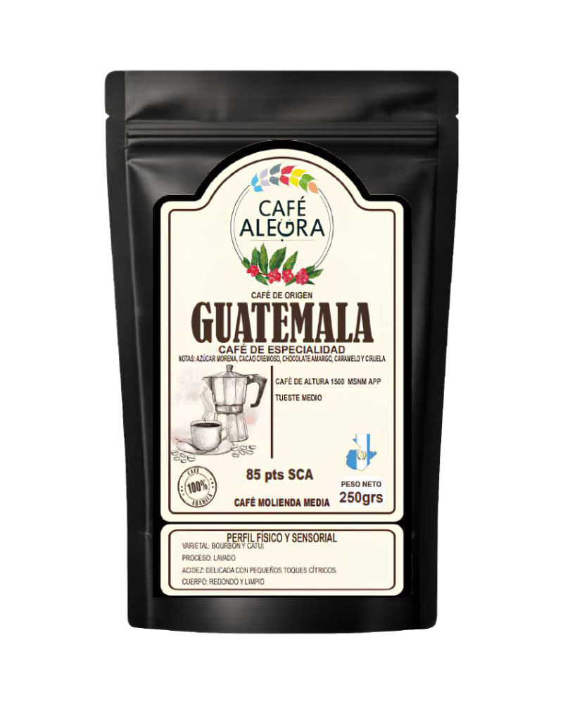
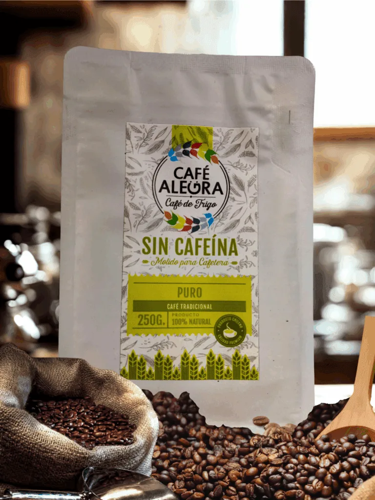
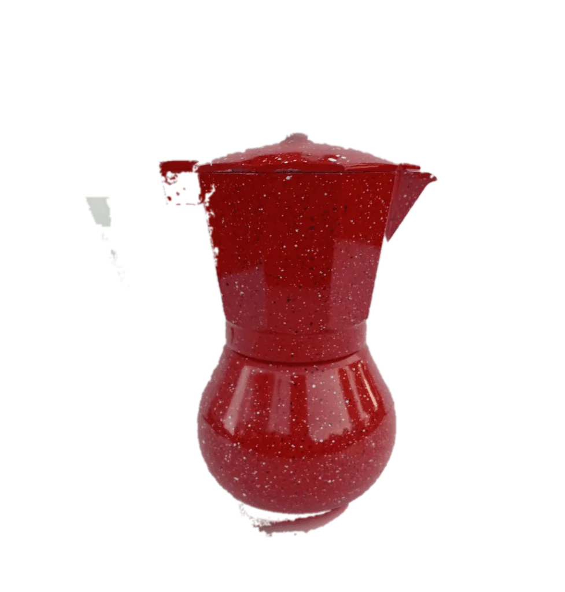
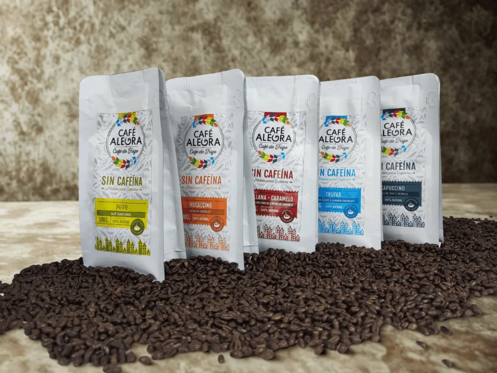

Del origen a tu taza, un ritual que alegra
Café de especialidad y cafés de tradición chilena: higos y trigo. Una tostaduría artesanal de Rancagua donde conviven la excelencia del cafetal y el rescate de nuestras raíces.
- 100% arábica
- Tostaduría artesanal
- Rancagua · Chile
- Precios con IVA incluido
Especialidad, Tradición y Complementos
Una arquitectura comercial simple y ordenada. Los orígenes, lotes y packs varían según disponibilidad sin alterar estas tres grandes categorías.
Café de Especialidad
Cafés de Origen único (Guatemala, Bolivia, Colombia) y Colección Praliné de autor.

Cafés de Tradición
Café de Higos campesino disponible y rescate patrimonial del café de trigo.

Complementos Cafeteros
Cafeteras Moka italianas, prensas francesas, teteras y filtros para tu ritual en casa.

Para empezar con buen pie
El encuentro entre la especialidad y la tradición
Nacimos en la VI Región con el propósito de ofrecer un café auténtico. En nuestra tostaduría artesanal conviven dos mundos que se complementan: la precisión sensorial de los mejores cafetales y el rescate patrimonial de nuestra tierra.
Curvas de Tueste
Seleccionamos granos arábica y cuidamos cada tueste en Rancagua para resaltar notas florales, dulces y achocolatadas sin quemar el grano.
Rescate del Higo y Trigo
Reinterpretamos bebidas ancestrales chilenas elaboradas a partir de higos y trigo tostado, transformándolas en alternativas nobles libres de cafeína.
Colección Praliné
Una línea pionera con identidad propia: ensambles de café arábica con avellanas chilenas, nuez, caramelo y especias como el cardamomo.
Una propuesta de café diferente para tu negocio
Conoce los cafés de origen y los ensambles Praliné. Los precios publicados son minoristas; consulta las condiciones para tu negocio.
